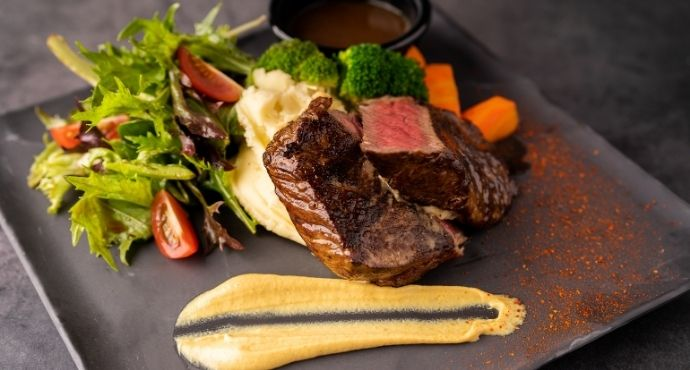
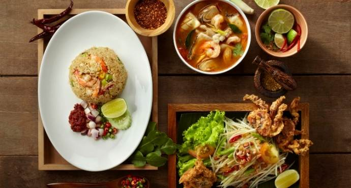
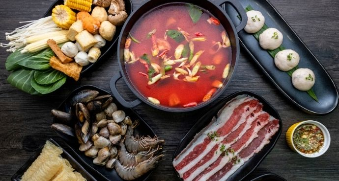
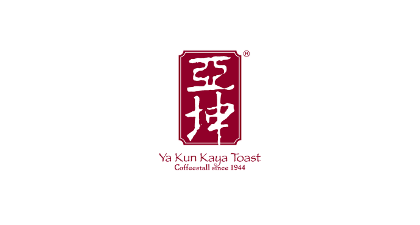

Food and Beverages
Explore the plethora of food available for you! You are sure to find something that satisfies your palate!
 ASTONS Specialities
ASTONS Specialities
Open daily: 11.30am - 10.00pm
Call us: 6258 2937
ASTONS Specialities is a homegrown casual steakhouse renowned for its steaks and homely western cuisine, without the hefty price tags. Quality food coupled with a relaxing and cosy ambience is what comes to mind when you hear about ASTONS Specialities. Watch time slip away as you bask in good food with good company at our restaurants. Our main menu consists of steak, chicken, pork and seafood meals with most main courses served with two decadent side dishes of your choice, cold or hot.
Popular items include our legendary steaks charbroiled to your preferred doneness, grillwork chicken chops that come in a myriad of flavours including hickory barbecue and chargrilled style and super combo meals such as surf & turf.
Check the menu here!

AXEsolute Bistro
Open daily: 11am-11pm
Call us: 8936 4353
A hearty and relaxing bistro which offers Italian fusion cuisine at an affordable price.
The menu features pan seared rib eye steak, grilled marinated chicken chop, chicken cutlet, pan seared
salmon fillet, chicken carbonara, seafood aglio olio, pizzas and a variety of finger food.
AXSolute Bistro also offers a wide range of beer and alcohol with amazing happy hour deals.
Check the menu here!
Jubilee Garden Restaurant
Open daily: 11:00am – 3:00pm, 5:30pm – 10:00pm (Till late for Banquet Services)
Call us: 6250 4477
Bringing you a new dining experience at Jubilee Garden Restaurant, a premium restaurant by Qian Xi Group.
Check the menu here!
 MacDonald's
MacDonald's
24 hours dine-in, drive-thru and McCafe®
Call us: 6259 1260
McDonald’s™ brings enjoyment to customers through our brand promise, “I’m lovin’ it”. With our restaurant environment, menu and innovations, we serve quality food at great value and fun for families and friends to bond over a meal at McDonald’s™.
Check the menu here!

Siam Kitchen
Open Monday to Thursday: 11:30am – 3:00pm, 6:00pm – 10:00pm
Friday to Sunday, PH, eve of PH: 11:30am – 10:00pm
Call us: 6259 9106
Siam Kitchen is where old world charm meets new. Experience the best of authentic Thai cuisine right
in the comfort of our little red dot here at Siam Kitchen, now halal-certified.
Let our bona fide chefs from Thailand, handpicked for their ability to whip up delicious home-styled
Thai cuisine, thrill you with familiar favourites such as Red Tom Yum Soup, Chicken in Green Curry
and Fish Head in Tom Yum Curry.
At Siam Kitchen, fresh ingredients of the highest quality are used to accentuate the aromatic flavours of
Thai cooking. Siam Kitchen also weaves an ambience of Thai heritage along with its gracious
hospitality to create a warm and inviting dining experience for all.
Check the menu here!

Suki-Suki Thai Hot Pot
Open Monday to Thursday: 11:30am – 3:00pm, 6:00pm – 10:00pm
Friday to Sunday, PH, eve of PH: 11:30am – 10:00pm
Call us: 6259 9106
Suki Suki Thai Hot Pot presents the multi-dimensional flavours of Thai cuisine through its spice-laden hot
pot fare. The Eat-All-You-Can buffet menu features quality ingredients like thinly sliced shabu-shabu beef
to home-made fish paste with over 40 different vegetables, mushrooms, and staples for its hot pot! Come
down now to this halal-certified restaurant and enjoy a satisfying meal!
Check the menu here!

Ya Kun Kaya Toast
Open daily: 7:30am - 9:30pm, Last order at 9pm
Call us: 6261 5426
The name Ya Kun invariably conjures up images of freshly made kaya toast in the minds of Singaporeans. What is unique about Ya Kun is that it offers the same humble fare of eggs, coffee and toast made with its special proprietary kaya recipe, prepared exactly the same way as when it first started in 1944. With 75 years of history, Ya Kun is a household name well-loved by all. A place where generations of Singaporeans gather to chat and indulge in their favourite coffee, it’s also where you can get scrumptious traditional kaya toast served with soft-boiled eggs. It is certainly the place that captures the true meaning of ‘The Toast that binds.... Kinship, friendship, partnership’.
Check the menu here!